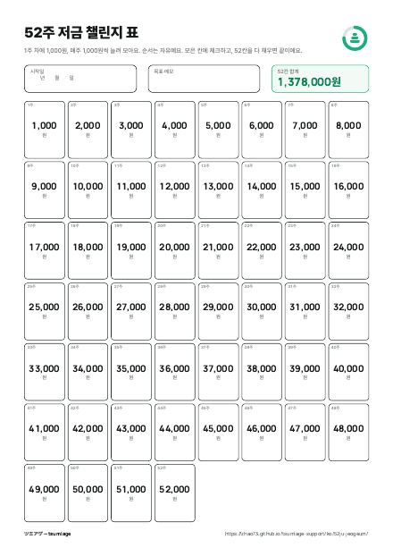

52주 저금 챌린지 방법과 표
매주 저금액을 1,000원씩 늘려 가는 1년짜리 저축 챌린지예요. 칸에 체크하면서 하면 얼마나 남았는지 한눈에 보여요.
1,378,000원1년(52주) 동안 모이는 금액 (1칸 1,000원 기준)
52주 저금 챌린지 하는 법
- 표를 준비해요. 1,000원부터 52,000원까지 52칸짜리 표를 써요. 아래 PDF를 인쇄하거나 앱에서 52주 챌린지를 고르면 돼요.
- 매주 한 칸을 골라 저금해요. 고른 칸의 금액을 저금통이나 저축 통장에 넣어요.
- 넣은 칸에 체크해요. 체크가 늘수록 합계가 쌓여요.
- 52칸을 다 채우면 끝. 1칸 1,000원이면 1,378,000원이 모여요.
합계 = 1,000원 × (1 + 2 + … + 52) = 1,000원 × 52 × 53 ÷ 2 = 1,378,000원
52주 저금 표 (체크할 수 있어요)
한 칸이 그 주의 금액이에요. 순서는 자유예요. 누른 칸의 합계가 위에 나와요.
0원0 / 52칸 (전체 1,378,000원)
얼마나 모일까? 계산표
순서대로 하면 처음엔 가볍고 뒤로 갈수록 한 번에 넣는 금액이 커져요. 거꾸로 하면 그 반대예요.
| 경과 | 순서대로: 그 주 | 순서대로: 합계 | 거꾸로: 그 주 | 거꾸로: 합계 |
|---|---|---|---|---|
| 1주 차 | 1,000원 | 1,000원 | 52,000원 | 52,000원 |
| 4주 차 | 4,000원 | 10,000원 | 49,000원 | 202,000원 |
| 13주 차 | 13,000원 | 91,000원 | 40,000원 | 598,000원 |
| 26주 차 | 26,000원 | 351,000원 | 27,000원 | 1,027,000원 |
| 39주 차 | 39,000원 | 780,000원 | 14,000원 | 1,287,000원 |
| 52주 차 | 52,000원 | 1,378,000원 | 1,000원 | 1,378,000원 |
금액을 바꾼 예: 1칸 500원이면 689,000원, 1칸 2,000원이면 2,756,000원이에요.
4가지 진행 방법
어떤 방법이든 52칸을 다 채우면 합계는 같아요.
순서대로
1,000원, 2,000원, 3,000원… 시작은 쉽지만 연말에는 한 주에 5만 원대가 돼요. 연말 지출도 미리 생각해 두세요.
거꾸로
52,000원부터 시작해 1,000원씩 줄여요. 의욕이 있을 때 큰 금액을 끝내 두면 연말이 편해요.
아무 칸부터
그 주에 낼 수 있는 금액의 칸을 골라요. 월급날 뒤에는 큰 칸, 빠듯한 주에는 작은 칸.
랜덤
남은 칸 중 하나를 무작위로 골라요. 앱에서도 남은 칸을 랜덤으로 고를 수 있어요.
끝까지 하는 팁
- 시작일을 정해 두세요. 1월 1일, 생일, 월급날 무엇이든 괜찮아요. 시작한 주가 1주 차예요.
- 매주 같은 요일에 저금해요. 통장이라면 월급날에 먼저 옮겨 두면 잊지 않아요.
- 못 낸 주가 있으면 작은 칸을 고르거나 다음 주에 두 칸을 채워요. 멈추지 않는 게 가장 중요해요.
- 표는 눈에 띄는 곳에 붙여 두세요. 앱에서는 홈 화면 위젯으로 진행 상황을 볼 수 있어요.

52주 저금 챌린지 표 (A4 인쇄용)
1,000원부터 52,000원까지 52칸에 시작일과 합계 칸을 넣은 A4 한 장짜리 표예요. 흑백으로 인쇄해도 잘 보여요. 무료로 받을 수 있어요.
iPhone에서 칸을 채우며 기록해요
Tsumiage에서는 52주 챌린지를 이 표와 같은 칸으로 기록할 수 있어요. 홈 화면·잠금 화면 위젯에서 한 번에 기록하고, 광고는 나오지 않아요.
자주 묻는 질문
52주 저금 챌린지로 1년에 얼마가 모이나요?
1주 차 1,000원에서 매주 1,000원씩 늘리면 52주에 1,378,000원이에요.
중간에 시작해도 되나요?
네. 시작한 주를 1주 차로 세면 돼요. 52주가 지나면 합계는 같아요.
한 주를 못 넣었어요.
작은 금액의 칸을 고르거나 다음 주에 두 칸을 채우면 돼요. 순서는 자유라서 합계는 변하지 않아요.
표는 어디서 받나요?
이 페이지에서 A4 PDF를 무료로 받을 수 있어요. 페이지의 표를 그대로 체크해서 써도 돼요(체크는 이 브라우저에 저장돼요).